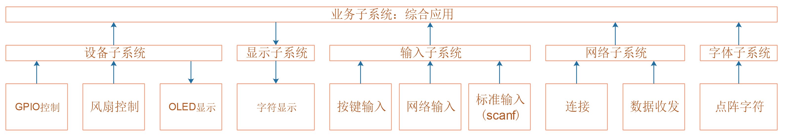
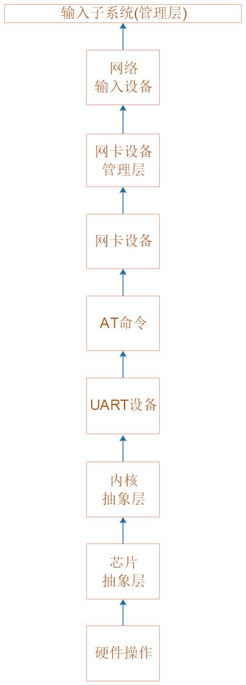
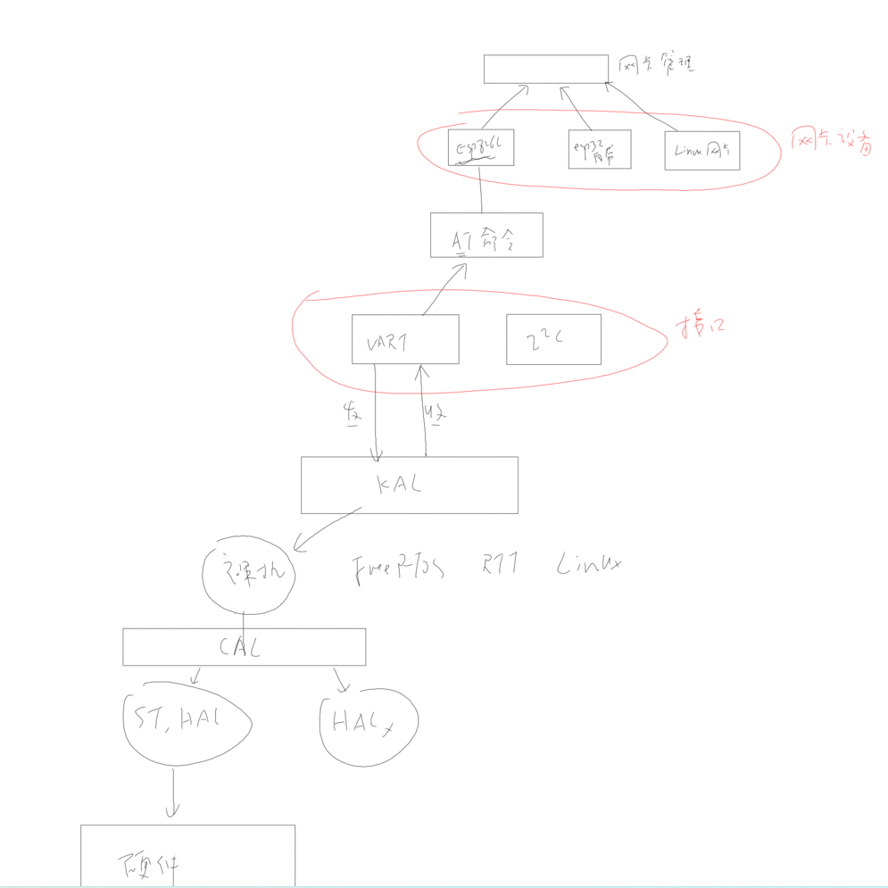
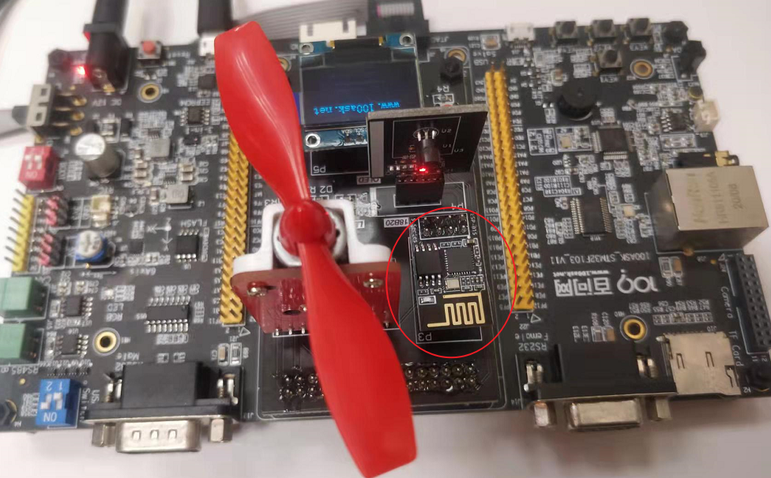
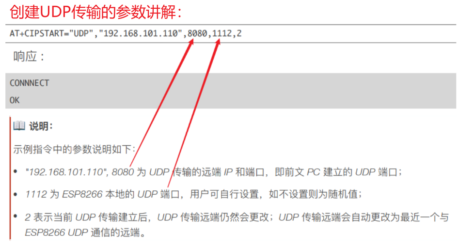
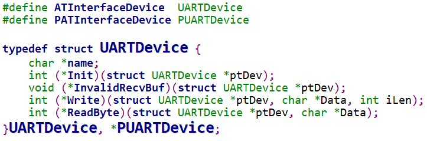
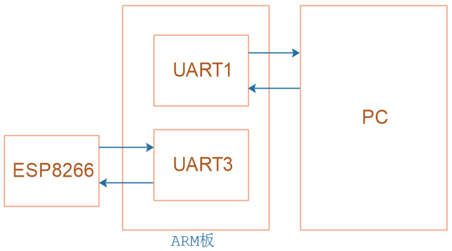

1.网络系统_设计思路与结构体
本节源码：在GIT仓库中
rtos_doc_source\RTOS培训资料\
01_项目1_基于HAL库实现智能家居\
05_项目1_基于HAL库的智能家居\1_项目源码\
10_19_net_struct
1.1 程序总体框架
1.2 网络系统层次
将网卡设备融入输入子系统中
1.3 怎么得出这些层次？
看视频。
1.4 抽象网卡设备的结构体
typedef struct NetDevice{
char *name; //根据名字来选择不同的网卡
char ip[4];
char mac[6];
int (*Init)(struct NetDevice *ptDev);
int (*Connect)(struct NetDevice *ptdev, char *SSID, char *password);
void (*Disconnect)(struct NetDevice *ptdev);
/*数据传输三要素:source, dest, data*/
/*Type选择TCP传输还是UDP传输*/
int (*Send)(struct NetDevice *ptDev, char *Type, char *pDestIP, int iDestPort, unsigned char *Data, int iLen);
/*接收时，使用iLocalPort来选择监听的端口，使用pSrcIP来保持源头的IP值*/
int (*Recv)(struct NetDevice *ptDev, char *Type, int iLocalPort, cahr *pSrcIP, unsigned char *Data, int iLen, int TimeoutMS);
}NetDevice,*PNetDevice;
2.网络系统_ESP8266模块编程
参考资料：
rtos_doc_source\RTOS培训资料\00_基础资源资料\
1_STM32F103\3_硬件资料\4_ESP8266-01S模块资料\01_技术手册\01_乐鑫(espressif)\
ESP8266 Non-OS AT 指令使用示例_V1.3.pdf
09-7_2-1.AT指令应用示例_UDP 传输_固定远端的 UDP 通信
09-7_2-2.AT指令应用示例_远端可变的 UDP 通信
本节源码：在GIT仓库中
rtos_doc_source\RTOS培训资料\
01_项目1_基于HAL库实现智能家居\
05_项目1_基于HAL库的智能家居\1_项目源码\
10_20_net_esp8266
2.1 AT指令练习
如下图接好ESP8266模块：

练习AT指令：
rtos_doc_source\RTOS培训资料\01_项目1_基于HAL库实现智能家居\
04_AT指令(基于ESP8266)\1_项目源码\
01_STM32F103_ESP8266-01S_Console
1. 配置 WiFi 模式
AT+CWMODE=3 // softAP+station mode
2. 连接路由器
AT+CWJAP="Programmers","100asktech" // SSID and password of router
响应：OK
3. 查询 ESP8266 设备的 IP 地址，查询到的STAIP+CIFSR:STAIP
才是需要的
AT+CIFSR
响应：
+CIFSR:APIP,"192.168.4.1"
+CIFSR:APMAC,"1a:fe:34:a5:8d:c6"
+CIFSR:STAIP,"192.168.3.133"
+CIFSR:STAMAC,"18:fe:34:a5:8d:c6"
OK
4. 单连接
AT+CIPMUX=0
响应：
OK
5. 创建 UDP 传输, 最后一个参数设置为2时表示UDP通信的远端可改变
（这个IP地址为我们所任意设置的PC本地IP，这里任意设置之后，如果需要使用ESP8266向电脑发送数据，那么SSCOM软件中本地IP就需要设置为192.168.101.110，端口为8080）
AT+CIPSTART="UDP","192.168.101.110",8080,1112,2
响应：
CONNNECT
OK
6. 发送数据
AT+CIPSEND=7 // Send 7 bytes
>UDPtest // enter the data, no CR
响应：
Recv 7 bytes
OK
7. 发送数据到其他指定远端。例例如，发数据到 192.168.101.111, 端⼝口 1000
AT+CIPSEND=7,"192.168.101.111",1000 // Send 7 bytes
>UDPtest // enter the data, no CR
响应：
Recv 7 bytes
OK
8. 接收数据。 当 ESP8266 设备接收到服务器器发来的数据，将提示如下信息：
+IPD,n:xxxxxxxxxx // received n bytes, data=xxxxxxxxxxx
9. 断开 UDP 传输
AT+CIPCLOSE
响应：
CLOSED
OK

2.2 ESP8266编程
2.3 网卡管理层编程
3.网络系统_实现AT命令
参考资料：
rtos_doc_source\RTOS培训资料\00_基础资源资料\
1_STM32F103\3_硬件资料\4_ESP8266-01S模块资料\01_技术手册\01_乐鑫(espressif)\
ESP8266 Non-OS AT 指令使用示例_V1.3.pdf
09-7_2-1.AT指令应用示例_UDP 传输_固定远端的 UDP 通信
09-7_2-2.AT指令应用示例_远端可变的 UDP 通信
本节源码：在GIT仓库中
rtos_doc_source\RTOS培训资料\
01_项目1_基于HAL库实现智能家居\
05_项目1_基于HAL库的智能家居\1_项目源码\
10_21_net_at_command
3.1 编写at_command.c
在esp8266.c中，调用了这些函数：
ATInterfaceSelect
ATInterfaceInit
ATCommandSend
ATDataRecv

3.2 实现UART接口设备
所以，对于不同的接口，抽象出一个结构体：
#define ATInterfaceDevice UARTDevice
#define PATInterfaceDevice PUARTDevice
typedef struct UARTDevice {
char *name;
int (*Init)(struct UARTDevice *ptDev);
void (*InvalidRecvBuf)(struct UARTDevice *ptDev);
int (*Write)(struct UARTDevice *ptDev, char *Data, int iLen);
int (*ReadByte)(struct UARTDevice *ptDev, char *Data);
}UARTDevice, *PUARTDevice;
3.3 AT命令返回值判断

以字符形式显示，得到OK换行的编码格式

4.网络系统_串口设备编程
参考资料：
08-6环形缓冲区的概念和实现
rtos_doc_source\RTOS培训资料\
01_项目1_基于HAL库实现智能家居\
05_项目1_基于HAL库的智能家居\1_项目源码\
10_22_net_uart_not_tested\
ModuleDrivers\driver_usart.c
本节源码：在GIT仓库中
rtos_doc_source\RTOS培训资料\
01_项目1_基于HAL库实现智能家居\
05_项目1_基于HAL库的智能家居\1_项目源码\
10_22_net_uart_not_tested
4.1 AT模块框架
在at_command.c里，调用了底层UART硬件的接口函数：


4.2 实现UART接口设备
STM32F103上使用了2个UART：
编程思路：

UART1的代码在ModuleDrivers\driver_usart.c里，
我们可以参考这个文件实现UART3的操作。
4.2.1 初始化
// Core\Src\usart.c
void MX_USART3_UART_Init(void)
{
/* USER CODE BEGIN USART3_Init 0 */
/* USER CODE END USART3_Init 0 */
/* USER CODE BEGIN USART3_Init 1 */
/* USER CODE END USART3_Init 1 */
huart3.Instance = USART3;
huart3.Init.BaudRate = 115200;
huart3.Init.WordLength = UART_WORDLENGTH_8B;
huart3.Init.StopBits = UART_STOPBITS_1;
huart3.Init.Parity = UART_PARITY_NONE;
huart3.Init.Mode = UART_MODE_TX_RX;
huart3.Init.HwFlowCtl = UART_HWCONTROL_NONE;
huart3.Init.OverSampling = UART_OVERSAMPLING_16;
if (HAL_UART_Init(&huart3) != HAL_OK)
{
Error_Handler();
}
/* USER CODE BEGIN USART3_Init 2 */
/* USER CODE END USART3_Init 2 */
}
// ModuleDrivers\driver_usart.c
void EnableUART3IRQ(void)
{
HAL_NVIC_SetPriority(USART3_IRQn, 0, 1);
HAL_NVIC_EnableIRQ(USART3_IRQn);
__HAL_UART_ENABLE_IT(&huart3, UART_IT_RXNE);
}
// smartdevice\device\uart\uart_dev.c
/**********************************************************************
* 函数名称： UART3Init
* 功能描述： 初始化UART3
* 输入参数： ptDev-没有使用
* 输出参数： 无
* 返 回 值： 0-成功
* 修改日期 版本号 修改人 修改内容
* -----------------------------------------------
* 2021/10/15 V1.0 韦东山 创建
***********************************************************************/
static int UART3Init(struct UARTDevice *ptDev)
{
/* 在Core\Src\main.c里已经初始化硬件
* 1. MX_USART3_UART_Init
* 2. EnableUART3IRQ
*/
ring_buffer_init(&g_UART3RingBuffer);
return 0;
}
4.2.2 发送数据
使用查询方式发送多个数据，调用流程如下：
UART3Write // smartdevice\device\uart\uart_dev.c
KAL_UART3Write // smartdevice\kal\kal_uart_dev.c
CAL_UART3Write // smartdevice\cal\cal_uart_dev.c
USART3_SendBytes // ModuleDrivers\driver_usart.c
底层函数是USART3_SendBytes，代码如下：
// ModuleDrivers\driver_usart.c
/**********************************************************************
* 函数名称： USART3_SendBytes
* 功能描述： 通过UART3发出多个数据
* 输入参数： buf-数据缓冲区
* 输入参数： len-数据长度
* 输出参数： 无
* 返 回 值： 0-成功
* 修改日期 版本号 修改人 修改内容
* -----------------------------------------------
* 2021/10/15 V1.0 韦东山 创建
***********************************************************************/
void USART3_SendBytes(char *buf, int len)
{
int i;
for (i = 0; i < len; i++)
{
while ((USART3->SR & (1<<7)) == 0);
USART3->DR = buf[i];
}
}
4.2.3 接收数据
流程为：
中断服务程序：把数据放入环形缓冲区
上层代码：从环形缓冲区得到数据
中断服务程序代码：
// ModuleDrivers\driver_usart.c
/**********************************************************************
* 函数名称： USART3_IRQHandler
* 功能描述： UART3中断函数,把接收到的数据放入环形缓冲区
* 输入参数： 无
* 输出参数： 无
* 返 回 值： 无
* 修改日期 版本号 修改人 修改内容
* -----------------------------------------------
* 2021/10/15 V1.0 韦东山 创建
***********************************************************************/
void USART3_IRQHandler(void)
{
static ring_buffer *uart3_ringbuffer = GetUART3RingBuffer();
unsigned char c = 0;
if((USART3->SR &(1<<5)) != 0)
{
c = USART3->DR;
ring_buffer_write(c, uart3_ringbuffer);
}
HAL_UART_IRQHandler(&huart3);
}
上层代码:
// smartdevice\device\uart\uart_dev.c
/**********************************************************************
* 函数名称： UART3ReadByte
* 功能描述： 通过UART3读取1个字节(不等待,无数据就返回-1)
* 输入参数： ptDev-没有使用
* 输出参数： Data-数据缓冲区
* 返 回 值： 0-成功, (-1)-无数据
* 修改日期 版本号 修改人 修改内容
* -----------------------------------------------
* 2021/10/15 V1.0 韦东山 创建
***********************************************************************/
static int UART3ReadByte(struct UARTDevice *ptDev, char *Data)
{
return ring_buffer_read((unsigned char *)Data, &g_UART3RingBuffer)
}
5.网络系统_单元测试
参考资料：
rtos_doc_source\RTOS培训资料\00_基础资源资料\
1_STM32F103\3_硬件资料\4_ESP8266-01S模块资料\01_技术手册\01_乐鑫(espressif)\
ESP8266 Non-OS AT 指令使用示例_V1.3.pdf
09-7_2-1.AT指令应用示例_UDP 传输_固定远端的 UDP 通信
09-7_2-2.AT指令应用示例_远端可变的 UDP 通信
本节源码：在GIT仓库中
rtos_doc_source\RTOS培训资料\
01_项目1_基于HAL库实现智能家居\
05_项目1_基于HAL库的智能家居\1_项目源码\
10_23_net_unittest_err
10_24_net_unittest_ok
5.1 编写测试代码
初始化
连接WIFI
显示自己的IP、端口
创建UDP传输
读取数据、打印出来
5.2 上机测试
向开发板发送数据：
使用sscom5.13.1
使用微信小程序：搜"百问网嵌入式物联网"
使用微信小程序：扫码
6.网络系统_用作输入设备
本节源码：在GIT仓库中
rtos_doc_source\RTOS培训资料\
01_项目1_基于HAL库实现智能家居\
05_项目1_基于HAL库的智能家居\1_项目源码\
10_25_net_input_not_tested
6.1 设计思路


ESP8266通过串口把网络数据发给主控，数据格式为：
+IPD,n:xxxxxxxxxx // received n bytes, data=xxxxxxxxxxx
所以，可以这样做：
在串口接收中断里：记录收到的数据
判断是否有+IPD,前缀
6.2 编写代码
构造一个InputDevice，在它的初始化函数里，提供串口中断的回调函数。
在回调函数里，处理串口数据。
6.3 上机测试
向开发板发送数据：
使用sscom5.13.1
使用微信小程序：搜"百问网嵌入式物联网"
使用微信小程序：扫码

7.网络系统_用作输入设备_单元测试
本节源码：在GIT仓库中
rtos_doc_source\RTOS培训资料\
01_项目1_基于HAL库实现智能家居\
05_项目1_基于HAL库的智能家居\1_项目源码\
10_25_net_input_not_tested
10_26_net_input_unittest_ok
7.1 编写单元测试代码
仍然使用net_test.c
7.2 上机测试
向开发板发送数据：
使用sscom5.13.1
使用微信小程序：搜"百问网嵌入式物联网"
使用微信小程序：扫码